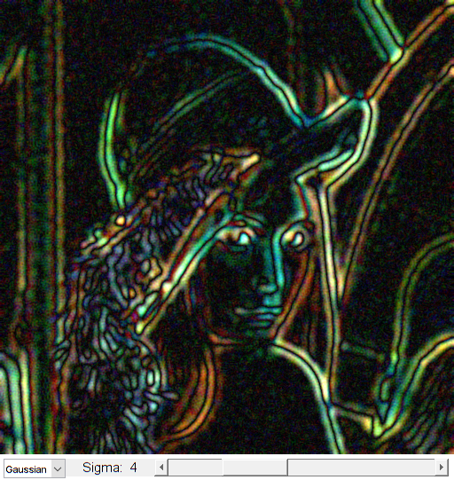

Laplacian Edge Detection
This program demonstrates Laplace point/edge detection using OpenCV function cv.Laplacian. It captures from the camera by default.
Sources:
function varargout = laplace_demo_gui() % setup video capture cap = createVideoCapture([], 'lena'); pause(1); assert(cap.isOpened(), 'Could not initialize capturing'); frame = cap.read(); assert(~isempty(frame), 'Could not read frame'); % create the UI h = buildGUI(frame); if nargout > 0, varargout{1} = h; end % main loop while ishghandle(h.fig) % grab frame frame = cap.read(); if isempty(frame), break; end % retrieve current values from UI controls sigma = round(get(h.slid, 'Value')); smoothType = get(h.pop, 'Value'); % smooth image ksize = sigma*5; if mod(ksize,2) == 0, ksize = ksize + 1; end switch smoothType case 1 frame = cv.GaussianBlur(frame, 'KSize',[ksize ksize], ... 'SigmaX',sigma, 'SigmaY',sigma); case 2 frame = cv.blur(frame, 'KSize',[ksize ksize]); case 3 frame = cv.medianBlur(frame, 'KSize',ksize); end % calculate laplacian lap = cv.Laplacian(frame, 'DDepth','int16', 'KSize',5); lap = cv.convertScaleAbs(lap, 'Alpha',(sigma+1)*0.25); % show result set(h.img, 'CData',lap); drawnow; end cap.release(); end function onChange(~,~,h) %ONCHANGE Event handler for UI controls sigma = round(get(h.slid, 'Value')); set(h.txt, 'String',sprintf('Sigma: %2d',sigma)); end function h = buildGUI(img) %BUILDGUI Creates the UI % parameters sigma = 3; max_sig = 15; sz = size(img); sz(2) = max(sz(2), 250); % minimum figure width % build the user interface (no resizing to keep it simple) h = struct(); h.fig = figure('Name','Laplacian', ... 'NumberTitle','off', 'Menubar','none', 'Resize','off', ... 'Position',[200 200 sz(2) sz(1)+29]); if ~mexopencv.isOctave() %HACK: not implemented in Octave movegui(h.fig, 'center'); end h.ax = axes('Parent',h.fig, ... 'Units','pixels', 'Position',[1 30 sz(2) sz(1)]); if ~mexopencv.isOctave() h.img = imshow(img, 'Parent',h.ax); else %HACK: https://savannah.gnu.org/bugs/index.php?45473 axes(h.ax); h.img = imshow(img); end h.pop = uicontrol('Parent',h.fig, 'Style','popupmenu', ... 'Position',[5 5 70 20], 'String',{'Gaussian', 'Blur', 'Median'}); h.txt = uicontrol('Parent',h.fig, 'Style','text', 'FontSize',11, ... 'Position',[75 5 100 20], 'String',sprintf('Sigma: %2d',sigma)); h.slid = uicontrol('Parent',h.fig, 'Style','slider', 'Value',sigma, ... 'Min',0, 'Max',max_sig, 'SliderStep',[1 5]./(max_sig-0), ... 'Position',[175 5 sz(2)-175-5 20]); % hook event handlers, and trigger default start set(h.slid, 'Callback',{@onChange,h}, ... 'Interruptible','off', 'BusyAction','cancel'); onChange([],[],h); end